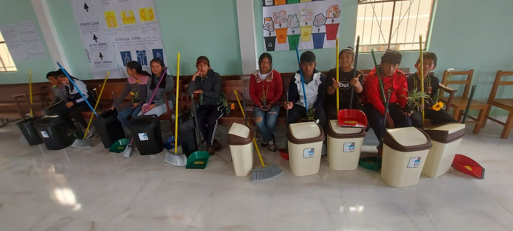
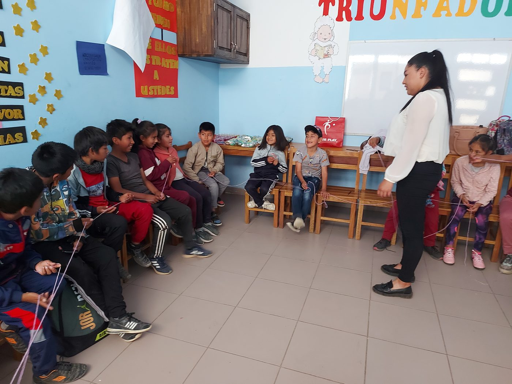

Acompañamos a cada niño, niña, adolescente y joven según su etapa de vida, fortaleciendo su desarrollo espiritual, físico, cognitivo y socioemocional.

Las áreas de enfoque incluyen salud pre y postnatal, planificación familiar, lactancia, educación para padres, acercamiento infantil y formación espiritual para madres gestantes, madres y sus bebés.
Cubre a los niños desde el primer año hasta los cinco años. Es la etapa en la que se abre la posibilidad de patrocinio, y el niño continúa recibiendo acompañamiento junto a un cuidador de referencia.

Los niños reciben intervenciones adecuadas para su edad, dentro de grupos de pares y en interacciones uno a uno con el personal del proyecto, además de actividades extracurriculares y de servicio.

Los adolescentes forman parte de una generación llamada a ser restaurada, para luego influir positivamente en sus familias, comunidades y nación, a través de un currículo y actividades complementarias de liderazgo.
Cada aporte se traduce en salud, educación y oportunidades reales para niños y familias de Sucre.
Quiero apoyar